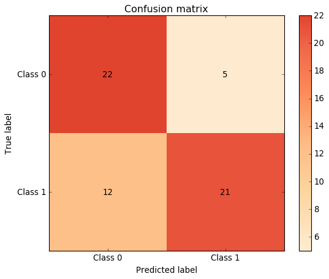
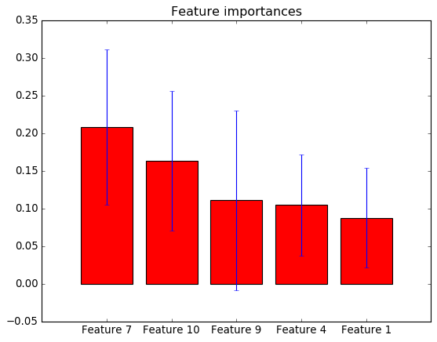
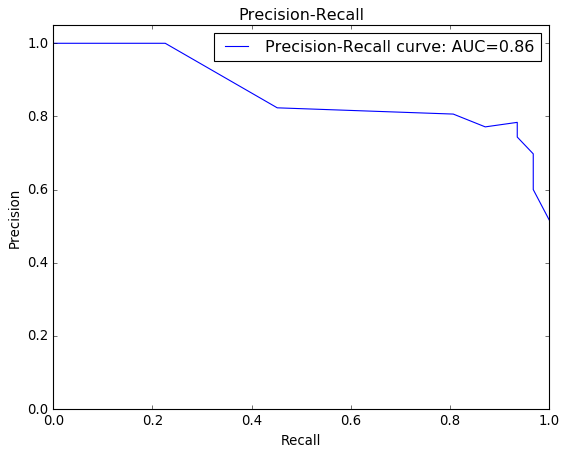
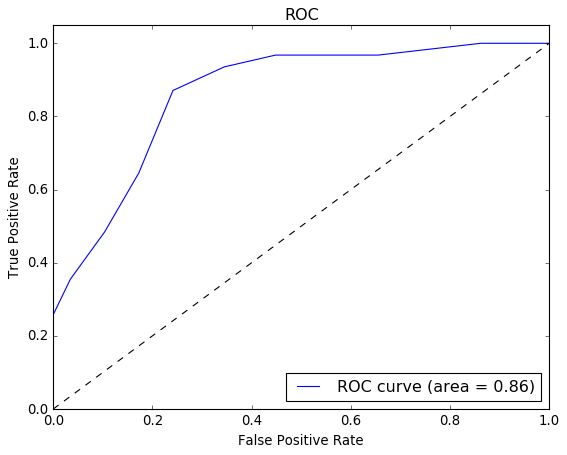
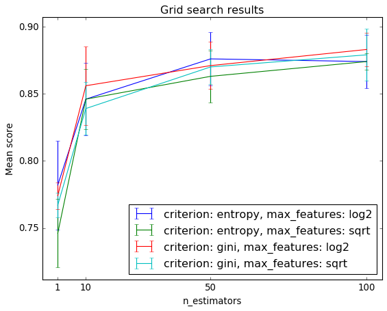
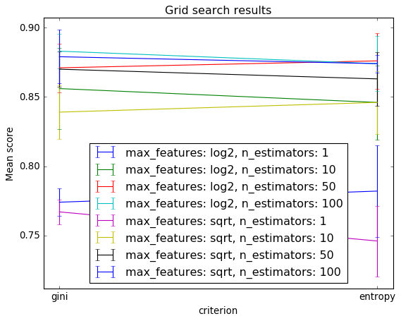
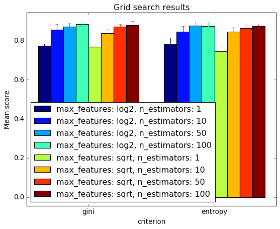
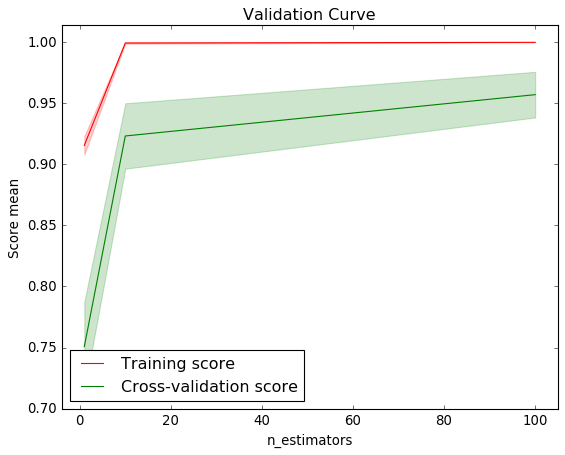

Plotting¶
-
sklearn_evaluation.plot.confusion_matrix(y_true, y_pred, target_names=None, normalize=False, cmap=None, ax=None)¶ Plot confustion matrix.
Parameters: y_true : array-like, shape = [n_samples]
Correct target values (ground truth).
y_pred : array-like, shape = [n_samples]
Target predicted classes (estimator predictions).
target_names : list
List containing the names of the target classes. List must be in order e.g.
['Label for class 0', 'Label for class 1']. IfNone, generic labels will be generated e.g.['Class 0', 'Class 1']ax: matplotlib Axes
Axes object to draw the plot onto, otherwise uses current Axes
normalize : bool
Normalize the confusion matrix
cmap : matplotlib Colormap
If
Noneuses a modified version of matplotlib’s OrRd colormap.Returns: ax: matplotlib Axes
Axes containing the plot
Examples
import matplotlib.pyplot as plt from sklearn import datasets from sklearn.ensemble import RandomForestClassifier from sklearn.cross_validation import train_test_split from sklearn_evaluation import plot data = datasets.make_classification(200, 10, 5, class_sep=0.65) X = data[0] y = data[1] X_train, X_test, y_train, y_test = train_test_split(X, y, test_size=0.3) est = RandomForestClassifier() est.fit(X_train, y_train) y_pred = est.predict(X_test) y_score = est.predict_proba(X_test) y_true = y_test plot.confusion_matrix(y_true, y_pred) plt.show()

-
sklearn_evaluation.plot.feature_importances(data, top_n=None, feature_names=None, ax=None)¶ Get and order feature importances from a scikit-learn model or from an array-like structure. If data is a scikit-learn model with sub-estimators (e.g. RandomForest, AdaBoost) the function will compute the standard deviation of each feature.
Parameters: data : sklearn model or array-like structure
Object to get the data from.
top_n : int
Only get results for the top_n features.
feature_names : array-like
Feature names
ax : matplotlib Axes
Axes object to draw the plot onto, otherwise uses current Axes
Returns: ax: matplotlib Axes
Axes containing the plot
Examples
import matplotlib.pyplot as plt from sklearn import datasets from sklearn.ensemble import RandomForestClassifier from sklearn.cross_validation import train_test_split from sklearn_evaluation import plot data = datasets.make_classification(200, 10, 5, class_sep=0.65) X = data[0] y = data[1] X_train, X_test, y_train, y_test = train_test_split(X, y, test_size=0.3) est = RandomForestClassifier() est.fit(X_train, y_train) plot.feature_importances(est, top_n=5) plt.show()

-
sklearn_evaluation.plot.precision_recall(y_true, y_score, ax=None)¶ Plot precision-recall curve.
Parameters: y_true : array-like, shape = [n_samples]
Correct target values (ground truth).
y_score : array-like, shape = [n_samples] or [n_samples, 2] for binary
classification or [n_samples, n_classes] for multiclass
Target scores (estimator predictions).
ax : matplotlib Axes
Axes object to draw the plot onto, otherwise uses current Axes
Returns: ax: matplotlib Axes
Axes containing the plot
Notes
It is assumed that the y_score parameter columns are in order. For example, if
y_true = [2, 2, 1, 0, 0, 1, 2], then the first column in y_score must countain the scores for class 0, second column for class 1 and so on.Examples
import matplotlib.pyplot as plt from sklearn import datasets from sklearn.ensemble import RandomForestClassifier from sklearn.cross_validation import train_test_split from sklearn_evaluation import plot data = datasets.make_classification(200, 10, 5, class_sep=0.65) X = data[0] y = data[1] X_train, X_test, y_train, y_test = train_test_split(X, y, test_size=0.3) est = RandomForestClassifier() est.fit(X_train, y_train) y_pred = est.predict(X_test) y_score = est.predict_proba(X_test) y_true = y_test plot.precision_recall(y_true, y_score)

-
sklearn_evaluation.plot.roc(y_true, y_score, ax=None)¶ Plot ROC curve.
Parameters: y_true : array-like, shape = [n_samples]
Correct target values (ground truth).
y_score : array-like, shape = [n_samples] or [n_samples, 2] for binary
classification or [n_samples, n_classes] for multiclass
Target scores (estimator predictions).
ax: matplotlib Axes
Axes object to draw the plot onto, otherwise uses current Axes
Returns: ax: matplotlib Axes
Axes containing the plot
Notes
It is assumed that the y_score parameter columns are in order. For example, if
y_true = [2, 2, 1, 0, 0, 1, 2], then the first column in y_score must countain the scores for class 0, second column for class 1 and so on.Examples
import matplotlib.pyplot as plt from sklearn import datasets from sklearn.ensemble import RandomForestClassifier from sklearn.cross_validation import train_test_split from sklearn_evaluation import plot data = datasets.make_classification(200, 10, 5, class_sep=0.65) X = data[0] y = data[1] X_train, X_test, y_train, y_test = train_test_split(X, y, test_size=0.3) est = RandomForestClassifier() est.fit(X_train, y_train) y_pred = est.predict(X_test) y_score = est.predict_proba(X_test) y_true = y_test plot.roc(y_true, y_score)

-
sklearn_evaluation.plot.precision_at_proportions(y_true, y_score, ax=None)¶ Plot precision values at different proportions.
Parameters: y_true : array-like
Correct target values (ground truth).
y_score : array-like
Target scores (estimator predictions).
ax : matplotlib Axes
Axes object to draw the plot onto, otherwise uses current Axes
Returns: ax: matplotlib Axes
Axes containing the plot
-
sklearn_evaluation.plot.grid_search(grid_scores, change, subset=None, kind='line', cmap=None, ax=None)¶ Plot results from a sklearn grid search by changing two parameters at most.
Parameters: grid_scores : list of named tuples
Results from a sklearn grid search (get them using the grid_scores_ parameter)
change : str or iterable with len<=2
Parameter to change
subset : dictionary-like
parameter-value(s) pairs to subset from grid_scores. (e.g.
{'n_estimartors': [1, 10]}), if None all combinations will be used.kind : [‘line’, ‘bar’]
This only applies whe change is a single parameter. Changes the type of plot
cmap : matplotlib Colormap
This only applies when change are two parameters. Colormap used for the matrix. If None uses a modified version of matplotlib’s OrRd colormap.
ax: matplotlib Axes
Axes object to draw the plot onto, otherwise uses current Axes
Returns: ax: matplotlib Axes
Axes containing the plot
Examples
import matplotlib.pyplot as plt from sklearn.ensemble import RandomForestClassifier from sklearn.grid_search import GridSearchCV from sklearn import datasets from sklearn_evaluation.plot import grid_search iris = datasets.load_iris() parameters = { 'n_estimators': [1, 10, 50, 100], 'criterion': ['gini', 'entropy'], 'max_features': ['sqrt', 'log2'], } est = RandomForestClassifier() clf = GridSearchCV(est, parameters, cv=5) #clf.fit(iris.data, iris.target) data = datasets.make_classification(1000, 10, 5, class_sep=0.7) clf.fit(data[0], data[1]) grid_scores = clf.grid_scores_ # changing numeric parameter without any restrictions # in the rest of the parameter set to_vary = 'n_estimators' grid_search(clf.grid_scores_, to_vary) plt.show()
# you can also use bars grid_search(clf.grid_scores_, to_vary, kind='bar') plt.show()
# changing a categorical variable # without any constraints to_vary = 'criterion' grid_search(clf.grid_scores_, to_vary) plt.show()
# bar grid_search(clf.grid_scores_, to_vary, kind='bar') plt.show()
# varying a numerical parameter but constraining # the rest of the parameter set to_vary = 'n_estimators' to_keep = {'max_features': 'sqrt', 'criterion': 'gini'} grid_search(clf.grid_scores_, to_vary, to_keep, kind='bar') plt.show()
# same as above but letting max_features to have two values to_keep = {'max_features': ['sqrt', 'log2'], 'criterion': 'gini'} grid_search(clf.grid_scores_, to_vary, to_keep, kind='bar') plt.show()

# varying two parameters - you can only show this as a # matrix so the kind parameter will be ignored to_vary = ('n_estimators', 'criterion') to_keep = {'max_features': 'sqrt'} grid_search(clf.grid_scores_, to_vary, to_keep) plt.show()
-
sklearn_evaluation.plot.validation_curve(train_scores, test_scores, param_range, param_name=None, semilogx=False, ax=None)¶ Plot a validation curve
Plot a metric vs hyperpameter values for the training and test set
Parameters: train_scores : array-like
Scores for the training set
test_scores : array-like
Scores for the test set
param_range : array-like
Hyperparameter values used to generate the curve
param_range : str
Hyperparameter name
semilgo : bool
Sets a log scale on the x axis
ax : matplotlib Axes
Axes object to draw the plot onto, otherwise uses current Axes
Returns: ax: matplotlib Axes
Axes containing the plot
Examples
import matplotlib.pyplot as plt import numpy as np from sklearn.datasets import load_digits from sklearn.svm import SVC from sklearn.ensemble import RandomForestClassifier from sklearn.learning_curve import validation_curve from sklearn_evaluation import plot digits = load_digits() X, y = digits.data, digits.target param_range = np.logspace(-6, -1, 5) param_name = "gamma" train_scores, test_scores = validation_curve( SVC(), X, y, param_name=param_name, param_range=param_range, cv=5, scoring="accuracy", n_jobs=1) plot.validation_curve(train_scores, test_scores, param_range, param_name, semilogx=True) plt.show()
param_range = np.array([1, 10, 100]) param_name = "n_estimators" train_scores, test_scores = validation_curve( RandomForestClassifier(), X, y, param_name=param_name, param_range=param_range, cv=10, scoring="accuracy", n_jobs=1) plot.validation_curve(train_scores, test_scores, param_range, param_name, semilogx=False) plt.show()

-
sklearn_evaluation.plot.learning_curve(train_scores, test_scores, train_sizes, ax=None)¶ Plot a learning curve
Plot a metric vs number of examples for the training and test set
Parameters: train_scores : array-like
Scores for the training set
test_scores : array-like
Scores for the test set
train_sizes : array-like
Relative or absolute numbers of training examples used to generate the learning curve
ax : matplotlib Axes
Axes object to draw the plot onto, otherwise uses current Axes
Returns: ax: matplotlib Axes
Axes containing the plot
Examples
from sklearn.learning_curve import learning_curve from sklearn import cross_validation from sklearn.naive_bayes import GaussianNB from sklearn.svm import SVC from sklearn.datasets import load_digits import matplotlib.pyplot as plt import numpy as np from sklearn_evaluation import plot digits = load_digits() X, y = digits.data, digits.target # Cross validation with 100 iterations to get smoother mean test and train # score curves, each time with 20% data randomly selected as a validation set. cv = cross_validation.ShuffleSplit(digits.data.shape[0], n_iter=100, test_size=0.2, random_state=0) cv = 5 estimator = GaussianNB() train_sizes = np.linspace(.1, 1.0, 5) train_sizes, train_scores, test_scores = learning_curve( estimator, X, y, cv=cv, n_jobs=1, train_sizes=train_sizes) plot.learning_curve(train_scores, test_scores, train_sizes) plt.show()
# SVC is more expensive so we do a lower number of CV iterations: cv = cross_validation.ShuffleSplit(digits.data.shape[0], n_iter=10, test_size=0.2, random_state=0) cv = 5 estimator = SVC(gamma=0.001) train_sizes = np.linspace(.1, 1.0, 5) train_sizes, train_scores, test_scores = learning_curve( estimator, X, y, cv=cv, n_jobs=1, train_sizes=train_sizes) plot.learning_curve(train_scores, test_scores, train_sizes) plt.show()